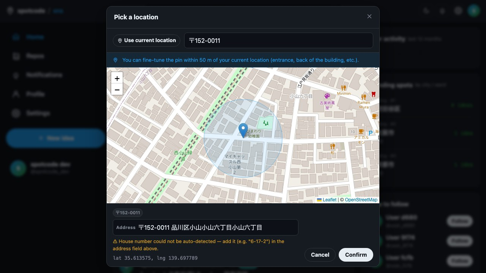
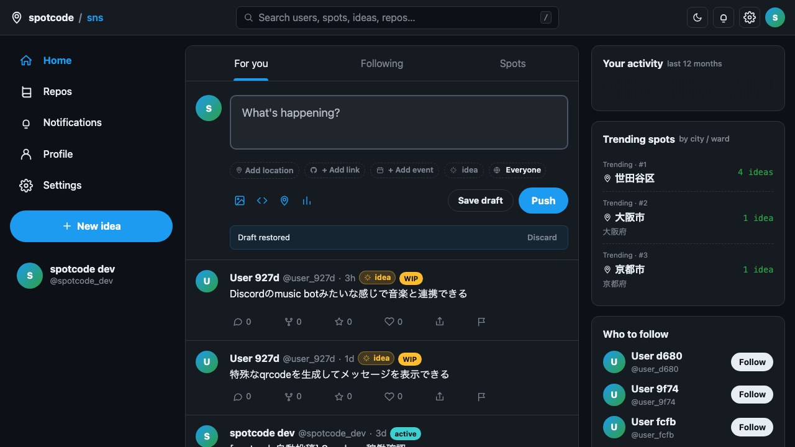
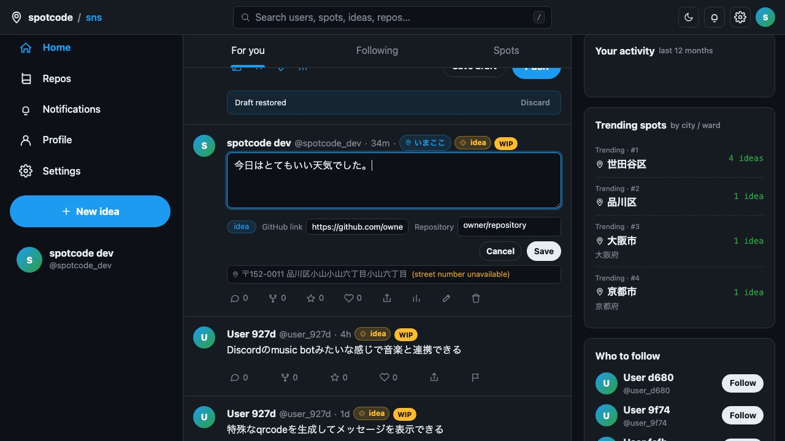
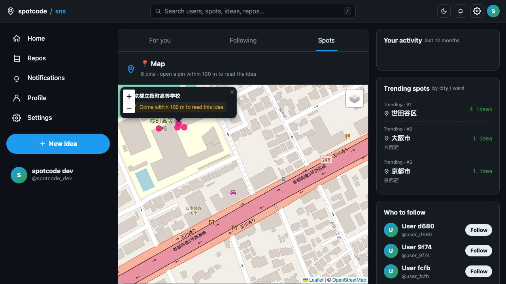

IDEA × LOCATION
現在地にピンを立てて、
その場の気づきを投稿
- ブラウザから現在地を取得し、地図上のピンとして確認できます。
- 場所名と住所を確認・調整してから投稿へ追加できます。
- 実際の場所とアイデアを一緒に残し、地域の発見につなげます。
机の前だけでは生まれない発想を、忘れる前に記録。現地の気づきを開発のスタート地点にします。

Web版 / 現在地の選択場所からアイデアが生まれ、
コードとして育っていく。

IDEA × LOCATION

Web版 / 現在地の選択POST × COMMUNITY
EDIT × IMPROVE

Web版 / 投稿編集MAP × DISCOVERY
